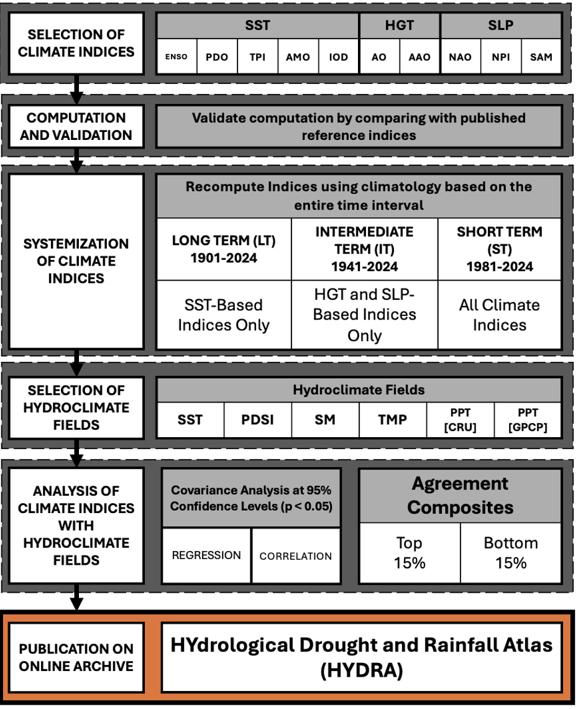

This site is password protected.
How HYDRA computes standardized climate indices and links them to hydroclimate fields through regression teleconnection maps and agreement composites.
HYDRA is an open-source standardized framework for computing climate variability indices and their influence on hydroclimate. Index definitions and computation methods are applied uniformly across datasets, removing inconsistencies that commonly arise when indices are recalculated using different conventions, software implementations, or reference intervals. Building on these indices, teleconnection maps quantify the statistical association between each climate index and hydroclimate variables of interest across the study domain. These maps are produced with a consistent processing pipeline across all indices, enabling direct comparison of teleconnection patterns across datasets, spatial resolutions, and time periods.
HYDRA is intended as a working resource rather than an additional set of stationary datasets. Reproducible code is provided that can be applied to any gridded hydroclimate product and any user-defined analysis period and baseline, supporting future assessments and updates as new datasets become available.

All input datasets used to compute the climate indices were obtained from publicly accessible repositories. Data availability determines the long-term (LT), intermediate-term (IT), and short-term (ST) start dates of 1901, 1941, and 1981 respectively.
| Field | Dataset | Coverage | Used for |
|---|---|---|---|
| Sea surface temperature | HadISST 1.1 (Rayner et al., 2003) | 1871–2024 | Ocean-based indices (LT, ST) |
| Geopotential height & sea level pressure | ERA5 (Hersbach et al., 2020; Bell et al., 2021) | 1940–present | Atmospheric circulation indices (IT, ST) |
| Precipitation, temperature, PDSI | CRU TS v4.09 (Harris et al., 2020; van der Schrier et al., 2011, 2013) | 1901–2024 | Hydroclimate fields (LT, IT, ST) |
| Soil moisture | GLEAM v4.2a (Miralles et al., 2025) | 1980–near present | Hydroclimate fields (ST) |
| Precipitation (land & ocean) | GPCP v2.3 (Adler et al., 2018) | 1979–present | Hydroclimate fields (ST) |
HYDRA focuses on ten of the most widely used climate indices derived from ocean and atmospheric circulation fields, selected for their well-established influence on hydroclimate variability. Using published definitions, each index was independently validated against externally published index values before being recomputed from gridded SST and reanalysis datasets. The result is a collection of indices that can be used consistently for intercomparison, rather than relying on externally published values computed from differing source data, methods, time periods, or reference intervals.
| Index family | Indices | Source field | Analysis periods |
|---|---|---|---|
| Ocean-based | ENSO, PDO, AMO, IOD, TPI | HadISST 1.1 SST | LT (1901–2024), ST (1981–2024) |
| Atmospheric circulation-based | AO, AAO (HGT); NAO, NPI, SAM (SLP) | ERA5 HGT & SLP | IT (1941–2024), ST (1981–2024) |
The ST period is the only interval over which all ten indices are available. Start dates for LT and IT were set by the longest record available for each respective dataset, while ST was chosen both to provide a common interval across all ten indices and to align with the satellite era, over which the underlying data are most reliable. All indices were computed monthly and then aggregated to seasonal means for DJF, MAM, JJA, and SON.
For validation, each index was computed using the same input data, time period, methodology, and base climatology as its published reference. After validation, systematized versions of each index were constructed using the same methodology but with consistent datasets, time periods, and climatological baselines for a common framework across all HYDRA products.
Pearson correlation coefficients between the reconstructed and reference index series exceed r = 0.98 (p < 0.05) for all ten indices, confirming that the computation methods correctly reproduce the published indices. Minor differences reflect re-gridding methods, dataset versions, and EOF software packages rather than errors in index methodology.
At each grid point, regression coefficients — expressed in units of hydroclimate anomaly per standard deviation of the index — and Pearson correlation coefficients are computed between each climate index and each hydroclimate field (and the SST field where applicable) for each season. Statistical significance is assessed with a two-tailed t-test at the 95% confidence level (p < 0.025).
Regressions and correlations are computed separately for each period:
For each of the ten climate indices and each season, years are ranked by index magnitude, and the upper and lower 15th percentiles are used to identify extreme positive and negative phase years respectively. DJF years are assigned to the January–February calendar year.
To characterize spatial covariability between the large-scale indices and regional hydroclimate anomalies, HYDRA uses an agreement composite framework based on the overlap between an index's extreme years and extreme hydroclimate states. Unlike a regression or correlation coefficient, which summarizes an average linear relationship, this framework identifies where an index's extreme-phase years align with hydroclimate extremes.
The procedure for each index:
Areas with high agreement show where hydroclimate extremes robustly align with the index's extreme-phase years.
To account for agreement counts arising by chance, random-chance thresholds are estimated using a hypergeometric distribution parameterized by the total number of years (N) and the sample sizes of the top and bottom 15th percentile years. These define fixed thresholds for categorizing agreement strength (none, low, medium, high), computed separately for LT, IT, and ST.
| Period | N (years) | K = n (15% extreme years) | Overlap by chance |
|---|---|---|---|
| 1902–2024 (LT) | 123 | 18 | 3 |
| 1940–2024 (IT) | 85 | 13 | 2 |
| 1981–2024 (ST) | 44 | 7 | 1 |
Areas showing agreement above the defined thresholds are retained; those below are masked out. Regions exhibiting conflicting signals are also masked — these are grid cells where, for a given index phase, both the top and bottom 15th percentile of the hydroclimate field appear among the composite years, indicating no coherent directional hydroclimate response.
All products are provided as gridded fields in NetCDF-4 format, with coordinate variables for latitude, longitude, and time, plus variable metadata including units, long-name attributes, and missing values flagged as NaN. Index time series and extreme states are additionally provided in CSV.
| Directory | Contents |
|---|---|
/indices/ | Computed climate index time series (monthly and seasonal, all periods) |
/indices/validation/ | Index series correlated against published references for validation |
/teleconnections/ | Teleconnection maps: LT (SST-based indices), IT (HGT/SLP-based indices), ST (all indices) vs. hydroclimate fields |
/agreements/ | Agreement composite files for LT, IT, and ST |
A conda environment file (hydra_env.yml) is provided in the repository to help install the Python
package dependencies. See Usage Examples for worked research applications and
interpretation caveats.